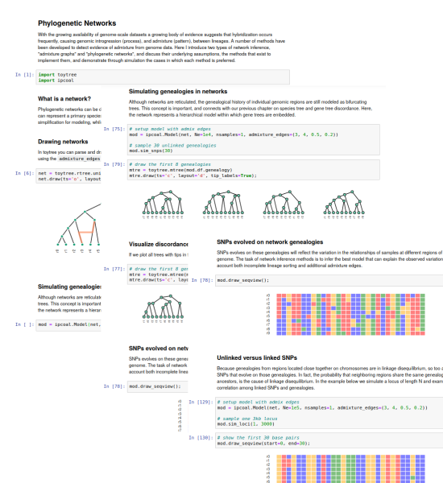

Introduction to Jupyter Notebooks¶
Jupyter notebooks are a type of interactive document that combines executable code (usually Python, but many other languages are supported as well) with rendered text (Markdown/HTML) and other media. They serve as a powerful teaching tool for embedding lesson instructions alongside code that users edit and execute interactively. They are also widely used in research, and for sharing reproducible results and workflows.

Jupyter servers¶
But what is a jupyter notebook? Let's dive a bit deeper into how they
work. Jupyter notebooks themselves are simply a document (a type of file
with the suffix .ipynb) that records the information that is entered
into it. These notebooks are opened and run by servers, which are
programs that send and receive information over a network. This could be
a local network (just within your computer) or a public network
(i.e., the internet). Jupyter servers work by connecting a notebook,
as the frontend, to a Python kernel (a running session of Python), as
the backend, communicating information back and forth between the two.
This is the idea behind jupyter notebooks: A Python backend that uses
a web-interface frontend to receive commands from users and send back
results, which can then be saved to the notebook file.
Most of the time, jupyter notebooks are run locally on a single computer. Below you can find instructions for installing and running jupyter locally. But, before we proceed to that, I want to introduce the concept of using remote servers to run jupyter. This is the process of starting a jupyter server on a remote machine, where all backend computation will take place, but connecting to it through a browser from your local machine. This may sound a bit complicated, and to some extent it is, but fortunately, for certain purposes, the process has become very streamlined through services such as Binder.
Binder (remote server)¶
Binder (mybinder.org) is a free web service that can be used to run
a temporary jupyter server accessible from a public URI. Once it is setup
you can simply share the link with anyone and when clicked it will quickly
start a new server and open the notebooks for the user. It is a great way
to share tutorials and lessons for teaching. You can even configure the
servers to install and load the specific software versions that are
required to run your code (this process is done using conda). It has
some limitations: the servers have only 2 processors available and a limited
amount of disk space and RAM, but the amount is usually adequate for most
simple tutorials. As a developer, it can be a great way to share examples
of your code without requiring wary users to install anything new.
We will use binder notebooks often throughout this textbook to share
coding exercises.
Using jupyter: A binder example¶
The best way to learn how to use jupyter notebooks is to jump in and try one yourself. Click the following link to connect to a binder-hosted jupyter notebook. This notebook includes a lesson on the basics of editing Markdown and code blocks, switching between the two, executing code, and about other options available in notebooks: jupyter-intro.ipynb
Installing jupyter locally¶
Now that you are familiar with how notebooks work, you may wish to install
jupyter locally on your machine so that you can get started using jupyter
to learn Python and create notebooks of your own. Jupyter and all its
dependencies can be easily installed with conda:
conda install jupyter -c conda-forge
Configuring jupyter¶
Although it is not required, I recommend running a one-time configuration
of jupyter which makes it a bit for convenient to use. Call the command
below to create a jupyter configuration file which will be stored in
a .jupyter/ dir in your home directory.
jupyter-notebook --generate-config
Now that this file exists you can mostly forget about it, unless you wish to customize your notebooks in some way. However, a benefit of it existing is that you can store a password for your server by running the command below. This is a measure that adds additional security, and also will stop jupyter from asking you to use random passwords.
jupyter-notebook password
Running jupyter locally¶
Now we can start a jupyter notebook server with the following command. The
option --no-browser is not necessary for everyone. For WSL2 users it will
hide a warning message that would otherwise pop up telling you that it cannot
open a browser automatically from your WLS2 system. Either way, once the server
is running you can open a browser on your own and connect to it by entering the
URI that will appear in your terminal.
# move to your home directory, and start a notebook server from here.
cd ~
jupyter-notebook --no-browser
If you entered the option above then the notebook will not automatically
open in your browser. You will simply see some text being printed in
the terminal. Open a tab in your browser of choice and go to localhost:8888.
This tells your browser a local address which is receiving information from
the local jupyter server running on your computer. Specifically, it is
sending information to port number 8888, the default port used by jupyter.
Jupyter filesystem interface¶
As you have seen before, the jupyter interface will show you a view of your
filesystem, including folder and files, from which you can either select an
existing file to open, or create a new one. Jupyter notebooks are saved in a
file format with the suffix .ipynb, and these will appear with little
notebook icons next to them.
Stopping the server¶
When you start a jupyter server in a terminal, you can just minimize that terminal or stick it in a corner. The server will continue to function for as long as you have this server running. When you are done using, and have saved your notebooks, you can stop the server by closing it (or interrupt it by pressing ctrl-c). Try this now by clicking on the terminal running the server and interrupting it. You can also close the browser tabs that were open. You can start the notebook server again at any time following the same commands be used above.
Running a jupyter server remotely¶
This is an advanced topic that you will likely not use yet as a new user.
Although binder makes it easy to connect to a free server running in the cloud, the process of setting up jupyter to run on one of your own servers remotely is not that complicated. This is useful if, for example, you want to run notebooks from an HPC cluster. This type of connection of course requires much greater security than to run jupyter on a single machine, since you do not want just anybody to be able to connect to your jupyter server, which would give them nearly full access to your machine. The simple solution is to tunnel the connection through SSH:
# a server on machine X serving on port 9999
jupyter-lab --ip=$(hostname) --port=9999 --no-browser
# a user on machine Y securely connects to machine X:9999
# creating a tunnel that serves content to Y:9999
ssh -N -L 9999:X:9999 user@hostname.hpc.edu
The user would then leave this SSH tunnel open in a terminal on their
laptop (machine Y) for as long as they want the tunnel connection
to be established. The user could then open their browser to
localhost:9999 and they should have access to the notebook server.
The user can stop the SSH tunnel at any time by closing the terminal and the notebook server would continue to run, just with nobody connecting to it on the other end. When the user wishes to re-connect they simply need to start the SSH tunnel again and refresh their browser.